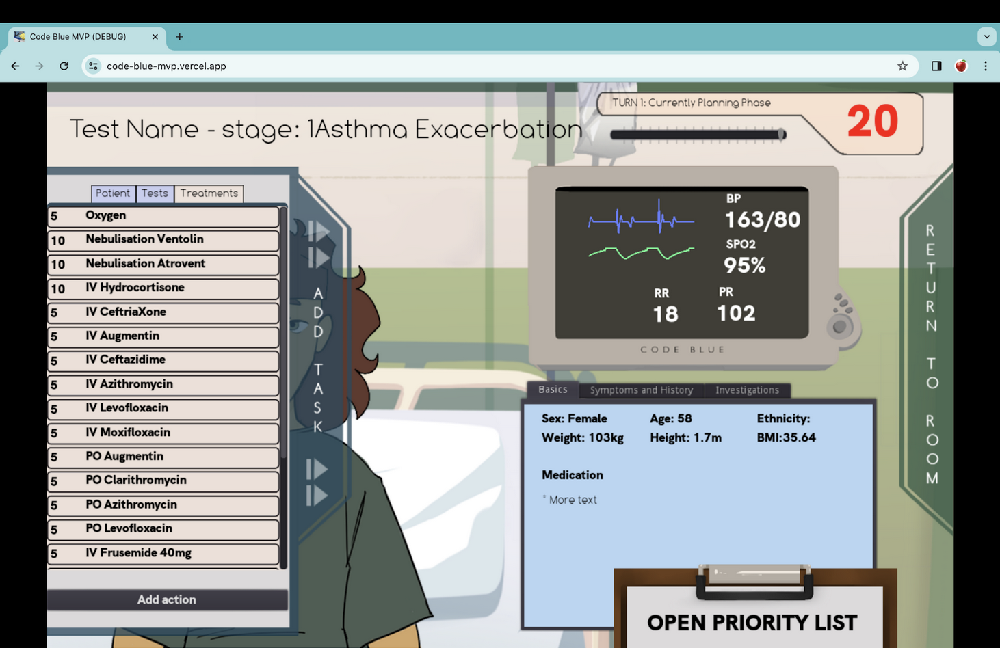

Code Blue: Medical Co-op Simulation Game
FYP Project No: H123290
Hannah Chia (A0225702N)
This work is done together in collaboration with two doctors, A/P Erle Lim and Dr. Michelle Tan, and supported by the Yong Loo Lin School of Medicine (YLLSoM) and Changi General Hospital(CGH) Department of Anaesthesia
| Name | Patient Progression | Multiple patients | Prioritisation amidst distractions | Scalability | Safe? |
|---|---|---|---|---|---|
| Classroom Teaching | Accurate, mostly textual | Difficult/Rare | N/A | OK | Yes |
| Simulation & Role-playing | Accurate | Difficult/Rare | Difficult/Rare | Not Scalable | Yes |
| Learning on the job | Most accurate | Yes | Difficult/Rare | N/A | Not really |
| Serious Game | Accurate | Yes | Yes | Very Scalable | Yes |
Game: Code Blue
Code Blue is a serious medical simulation game set in a hospital ward, where junior doctors learn to prioritise tasks to better serve their patients.
Target Audience: students studying medicine preparing for work in real hospital wards.
Built with Godot and Supabase as a backend, hosted on web
Embedded Demo
Tutorial
Familiarising with the ward
Let's try out a sample game
Prioritise
Executing Actions
Taking a wrong action
Having Results Come Back
Understanding results
Feedback: PatientScreen

Feedback: Triage patients visually
Exaggerated Breathing animations
>
Feedback: Triage patients visually
Old looking characters

Design decisions
Impact of Dashboard
- Better (visual) understanding of relationships between data
- Speed development during project
- Allows development after FYP without developer involvement
Project Timeline
Step 1: Context
- When will this talk help you?
- Why do you need this talk?
- What is this mystery tool?
Okay, so?
- Case study
- Recap
Step 2: Introducing **** to save time and do your job better
- It's fast
- It's effective
- It's flexible
Ready? Let's start!
Why - an illustration
What: React Admin
React-Admin
Set up and build fast
Effective: all the features you need
The deliverable...
Other concerns?
- Development during FYP
- Handover after FYP
Condition Progression
stateDiagram-v2 direction LR [*] --> Stage1 Stage1 --> Stage2: no/wrong action Stage2 --> Stage3: no/wrong action Stage2 --> Stage1: correct intervention Stage3 --> Stage2: correct intervention Stage3 --> [*]: ends
If you do work with
- Complicated relational data
- That needs real-time updating
- And external stakeholders must be able to CRUD
BECAUSE
- Don’t waste time
- It’s flexible & robust
- Get on the same page (dashboard) with stakeholders!
Build dashboards fast with React-Admin
https://marmelab.com/react-admin/
talk by kaixin-hc